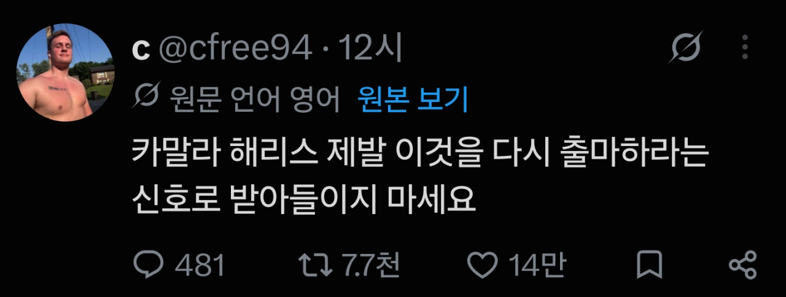

미국 선거 관련 X에서 좋아요를 많이 받은 글
댓글
서로 간첩질 존나 하네 ㅋㅋㅋ 트럼프는 민주당 스파이, 쟤는 공화당 스파이 ㅋㅋㅋㅋ
사격중지!!
미국이랑 중국도 여성 지도자 한 번 합시다
노머고한테도 발린년
뷰지면 개추 라는 댓글이 아직도 기억에 남는다
지금이니?!!!
카밀라 연설하는거 보면 ㄹㅇ 설득력 개좆도 없는데
트럼프한테도 진 대단한년이긴해

서로 간첩질 존나 하네 ㅋㅋㅋ 트럼프는 민주당 스파이, 쟤는 공화당 스파이 ㅋㅋㅋㅋ
사격중지!!
미국이랑 중국도 여성 지도자 한 번 합시다
노머고한테도 발린년
뷰지면 개추 라는 댓글이 아직도 기억에 남는다
지금이니?!!!
카밀라 연설하는거 보면 ㄹㅇ 설득력 개좆도 없는데
트럼프한테도 진 대단한년이긴해
???: 드디어 때가 왔다!